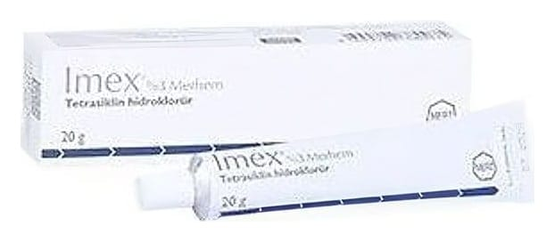

Imex Merhem, 100 g

Ne için kullanılır
KT · Bölüm 1: IMEX? deri üzerine uygulanan antibiyotikler sınıfına ait tıbbi bir üründür. | IMEX?, tetrasiklin hidroklorür adlı etken madde içermektedir. Bu madde bakterileri öldürür. : Her kutuda bir adet 20, 50 veya 100 g'lik alüminyum tüplerde kullanıma sunulmaktadır. : IMEX/, iltihaplı (yangılı) formları başta olmak üzere, yüzeysel akne tedavisinde kullanılır.